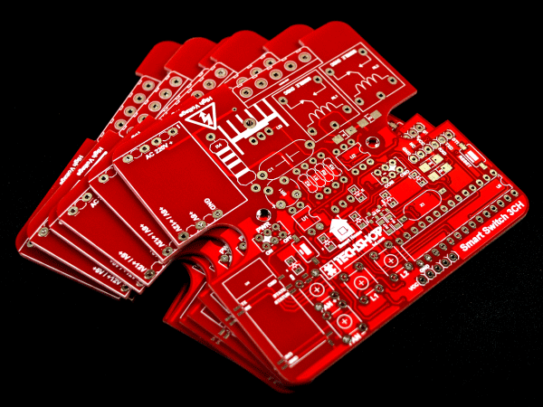
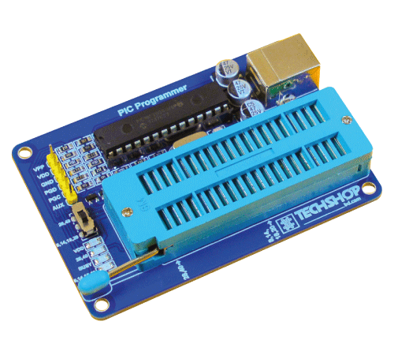
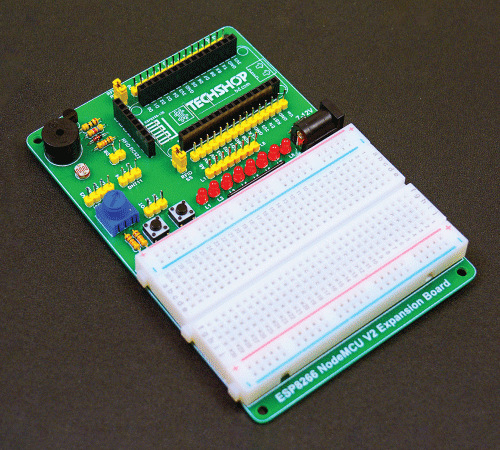

Innovation Library
PCB & Hardware Collection

Professional PCB Design & DFM Workflow
Every hardware design in this collection adheres to strict global manufacturing standards and DFM (Design for Manufacturability) rules. The workflow ensures 100% accurate Gerber/Drill files, precise trace width/clearance for noise elimination, and high-quality silkscreen/finish for professional results.


AVR Trainer Kit Pro
Dev BoardComprehensive educational development board built around ATmega16/32. Features integrated LCD, 7-segment displays, sensors, and wireless slots for lab experimentation.
Key Components: ATmega16/32, LCD, 7-Segment, LEDs, Buzzer, DS18B20.

PIC Programmer ZIF
ToolUSB-powered Microchip PICkit2 architecture tool. Features ZIF socket, ICSP connector, status LEDs, and logic analyzer support for 8/16/32-bit MCUs.
Key Features: ZIF Socket, Logic Analyzer, ICSP.

L293D Dual DC Motor Controller
ModuleCompact H-bridge driver module for two DC motors or one stepper. Features onboard 5V regulation, independent enable switches, and heavy-duty terminal blocks.
Key Components: L293D IC, 5V Regulator, Screw Terminals.

ESP8266 8-Channel IoT Smart Switch
IoTAdvanced automation board powered by NodeMCU ESP12E. Controls eight Hi-Link AC-DC power supply relays via Wi-Fi with individual status LEDs.
Key Components: NodeMCU ESP12E, Hi-Link AC-DC, 8-Channel Relays.

NodeMCU V2 Prototyping Board
Dev BoardAll-in-one prototyping platform for NodeMCU V2. Integrates mini breadboard, DC barrel jack, voltage regulation, buzzer, push buttons, and status LEDs.
Key Components: Breadboard, NodeMCU Sockets, DC Jack.